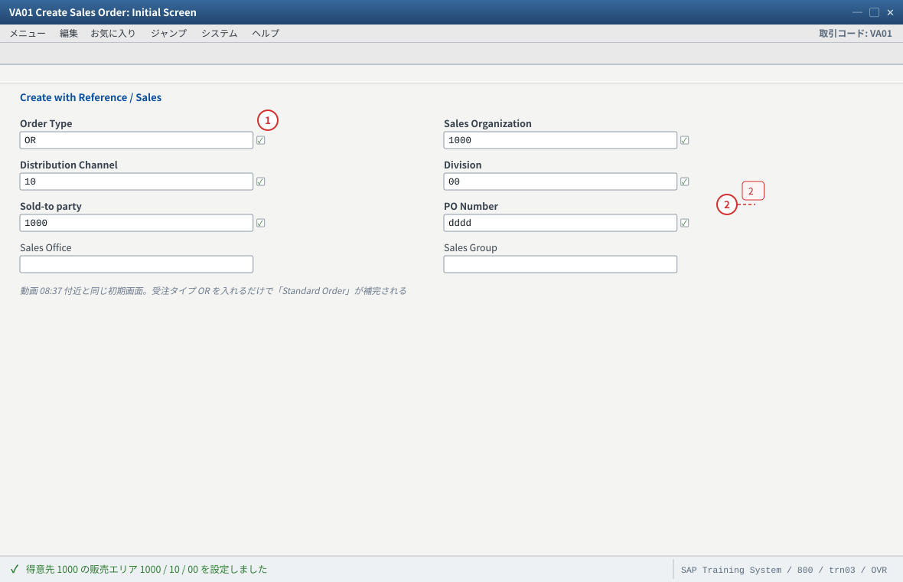
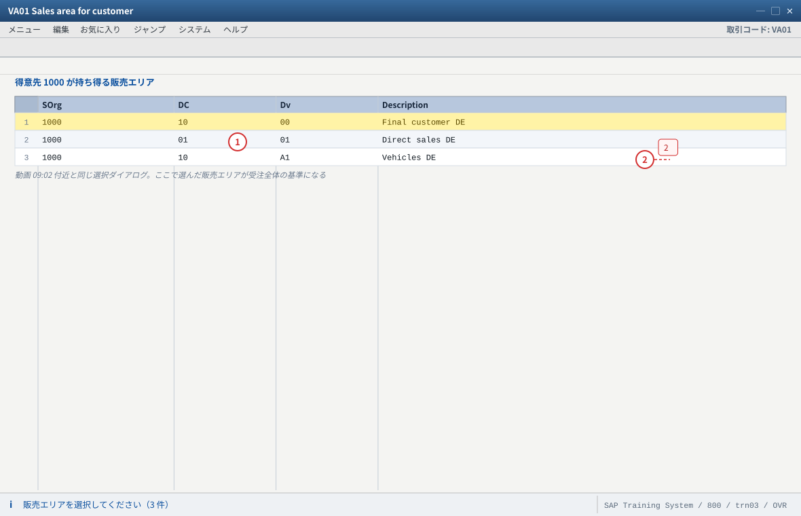
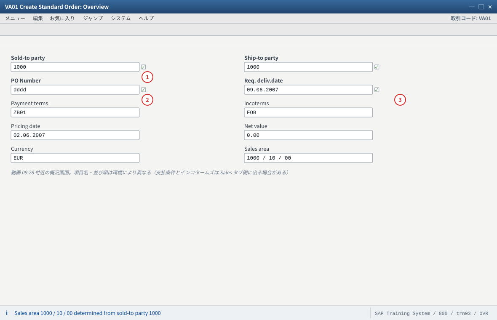
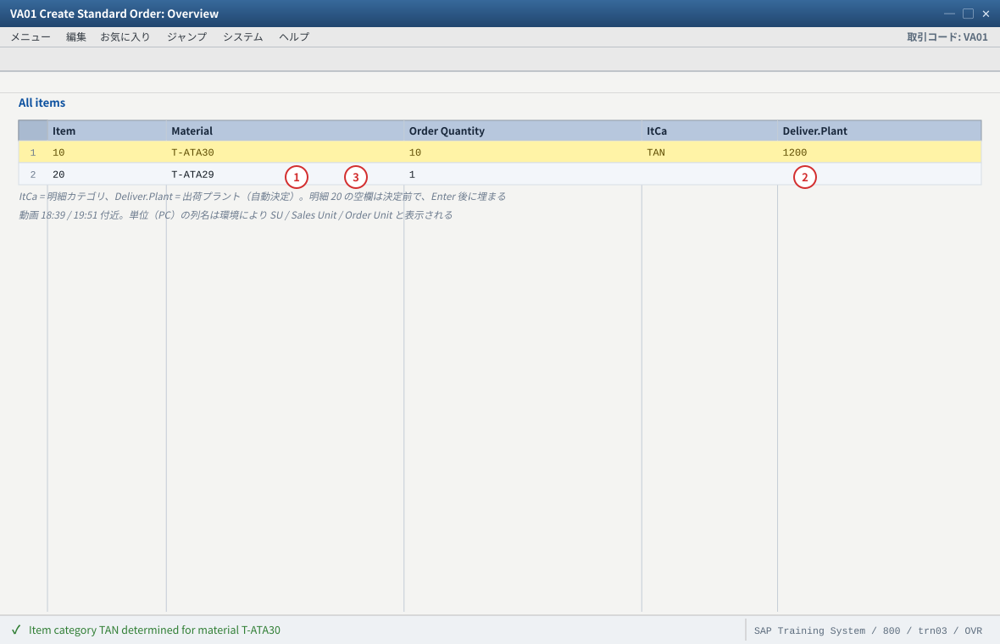
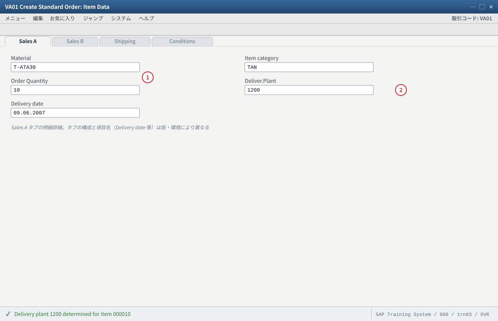
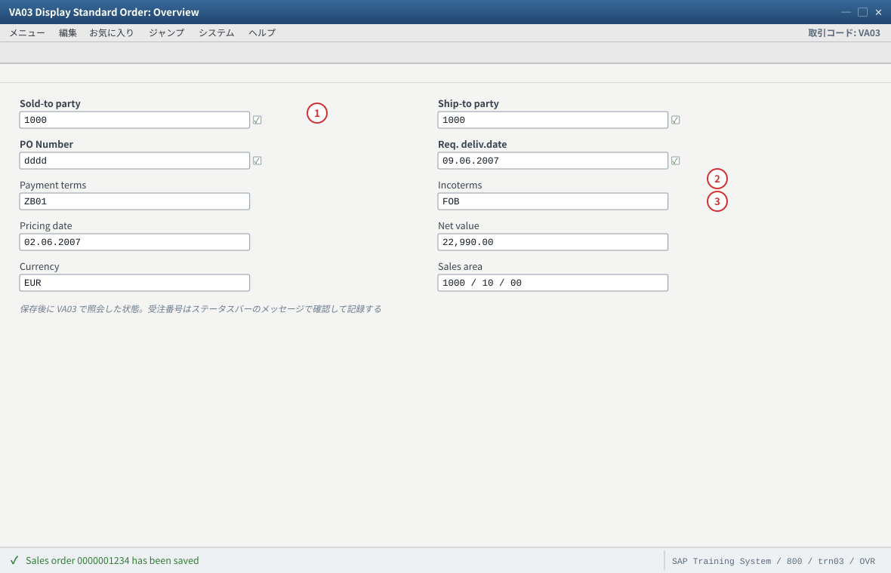
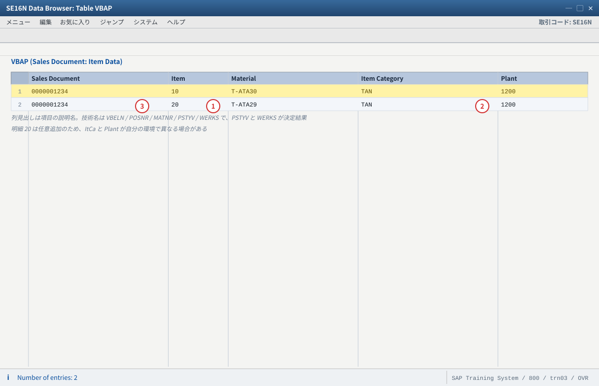

.png 放进 assets/gui/ 后执行 python3 tools/swap_gui_images.py <site> --apply 一键替换。练习① 受注登録（VA01）—— 動画のデモを自分の環境で再現する
06:48〜21:35）の実演を、自分の環境で 1 件作ります。① 販売エリアの導出 → ② 主データからの提案（パートナー・支払条件）→ ③ 明細入力（T-ATA30）→ ④ 出荷プラントの自動提案 → ⑤ 与力価格・税の決定 → ⑥ 保存（不完全性チェック）。受注番号を取ったら
VA03 と SE16N で「なぜその値になったか」の証拠を取ります。1-1 VA01 初期画面 —— 販売エリアを導出する（動画 08:37 付近）
入力値
| 項目 | 値 | 説明（なぜ必要か） |
|---|---|---|
| 受注タイプ（Order Type） | OR | Standard Order。動画の初期画面で OR → Standard Order が選ばれています |
| 販売組織 / 販売チャネル / 部門 | 1000 / 10 / 00 | 販売エリア。動画のデモ値（Germany Frankfurt / Final customer sales / Cross-division） |
| 得意先（Sold-to party） | 1000 | 動画のデモ得意先（Becker Berlin）。練習用なら T-S62130 でも可 |
| 参照（Create with Reference） | （空のまま） | 動画は新規作成。参照コピーは練習④で扱います |
VA01を起動する。タイトルが Create Sales Order: Initial Screen であることを確認（動画と同じ）。- 受注タイプに
ORを入れて Enter。「Organizational data」グループが開くことを確認する。 - 販売組織
1000を入れる（F4 で選べることを確認＝組織構造の割当が生きている証拠）。 - 得意先
1000を入れて Enter。動画と同じく「Sales area for customer」ダイアログが出たら、1000 / 10 / 00（Germany Frankfurt / Final customer sales）を選ぶ。 - 概況画面（Create Standard Order: Overview）に遷移することを確認する。
OR が効いている）。② ヘッダの Sales area が
1000 / 10 / 00 になっている。③ 得意先が複数の販売エリアを持つ場合、動画と同じ選択ダイアログが出る（出ない場合＝その得意先は 1 販売エリアのみ）。
② 得意先を入れても画面が進まない → 得意先にその販売エリアビューが無い（
XD03）。③ 「Create with Reference」欄に何か入っていないか確認。参照コピーになると、明細カテゴリや品目使用目的が想定外になります（動画も空のまま進めています）。
09:02 付近を再生し、「Sales area for customer」ダイアログの選択肢と自分の環境の選択肢を見比べてください。違いがあればその理由（組織構造・得意先マスタ）を書きます。
- 1 受注タイプ OR ＝ Standard Order。伝票タイプが明細カテゴリ決定・価格決定手順・不完全性手順を決める起点
- 2 得意先は複数の販売エリアを持ち得る。Enter 後に選択ダイアログが出るのはそのため
自システムでの確認：VA01 初期画面の F4 に自分の販売組織が出るか（出ない＝組織構造の割当未了）。得意先の販売エリアは XD03、PO 番号が必須かは V.02 で確認。

- 1 ここに出るのは得意先マスタ（KNVV）に登録済みの販売エリアだけ
- 2 選んだ販売エリアが、以降の与力条件・出荷条件・パートナー・出力の基準になる
自システムでの確認：XD03 の販売エリアビューで、その得意先が持つ販売エリアを確認する。
1-2 概況画面 —— ヘッダと主データからの提案（動画 09:28・13:38 付近）
確認する値（動画のデモ値）
| 項目 | 動画の値 | どこから来るか（源泉） | 確認方法 |
|---|---|---|---|
| Sold-to party | 1000 Becker Berlin / Calvinstrasse 36 / 13467 Berlin-Hermsdorf | 得意先マスタ（KNA1 の住所） | XD03 |
| Ship-to party | 1000（与力先と同じ） | 得意先マスタのパートナー機能（KNVP） | XD03 → パートナー機能 |
| PO Number | dddd／test（ダミー） | 手入力。動画の環境では必須項目になっている | V.02（不完全な受注一覧）で必須項目を確認 |
| 支払条件（Payment terms） | ZB01（14 Days 3%, 30/2%） | 得意先マスタ（販売エリアデータ） | XD03 → 販売エリアデータ |
| インコタームズ（Incoterms） | スライド FOB／実機デモ CIF Berlin | 得意先マスタ（販売エリアデータ） | XD03 → 販売エリアデータ。動画でも 2 通り出ている＝環境依存の代表例 |
| 与力価格日付（Pricing date） | 02.06.2007 | 受注日と与力日付タイプ（VOV6 の納入日付タイプ） | VA03 ヘッダ（日付）／VOV6 |
| 納入希望日（Req. deliv.date） | 09.06.2007 | 手入力＋出荷日程（MM03 のリードタイム） | VA03 ヘッダ |
| 正味価額（Net value） | 0.00 EUR → 明細投入後 22,990.00 EUR | 条件レコード（与力価格） | VA03 条件画面／VK13 |
- ヘッダを上から確認し、主データから提案された値（住所・支払条件・インコタームズ）を書き出す。
- PO Number を入れる（例：
dummy-01）。動画の環境では必須のため、空のままだと保存時に赤いエラーが出ます（動画09:28付近の「Enter PO number」がまさにこれ）。 - 納入希望日を入れる（例：今日＋数日）。動画は
09.06.2007（＝当時のデモ日付）です。自システムでは未来日を入れてください。 - 「Sales」タブで支払条件・インコタームズ・与力価格日付・注文理由を確認する。
- 必要なら出荷先（Ship-to party）だけ変えて、住所と出荷プラントがどう変わるかを見る（練習②の予習。今は保存せずに「戻る」で構いません）。
② PO Number を空にするとエラーで保存できない（動画と同じ症状を再現できる）。
③ 「Sales document → ヘッダ → パートナー」（または
VA03）で SP／BP／PY／SH が並ぶ。XD02）。受注側では直さず、マスタを直すのが原則（業務でも同じ）。② インコタームズが想定と違う → 得意先マスタの値、または伝票タイプの既定値。どちらが効いたかは
XD03 と VOV8 を見比べる。③ 与力価格日付が想定外 → 日付タイプの設定（
VOV6）と受注日時の関係を確認。与力日付がずれると条件が拾われず Net value が 0 になります（C12）。
- 1 PO Number はこの環境では必須。空のまま保存すると不完全性チェックで『Enter PO number』の赤いエラーが出る（動画 09:28 付近の症状がこれ）
- 2 与力価格日付がずれると条件レコードが拾われず Net value が 0 になる（C12）。納入希望日との関係は VOV6 の日付タイプ
- 3 この時点の Net value 0.00 は正常（明細がまだ無い）。明細投入後も 0.00 なら条件レコード不在か有効期間外を疑う
自システムでの確認：提案値の出所は XD03（販売エリアビュー）と VOV8（伝票タイプの既定値）。PO Number が必須かは V.02 で確認。与力日付タイプは VOV6。
1-3 明細の入力 —— 品目と出荷プラントの自動提案（動画 18:39・19:51 付近）
入力値
明細 10： 品目 T-ATA30 数量 10 PC 納入希望日 09.06.2007（自システムは未来日） 明細 20： 品目 T-ATA29 数量 1 PC （任意。動画の後半デモでは 10 / 20 の 2 明細） 確認したい値： 明細カテゴリ（ItCa） : TAN（Standard Item） 出荷プラント : 品目マスタ 販売組織1 の値（動画では 1200） 正味価額 : 明細投入後に自動計算（動画では 22,990.00 EUR）
- 概況画面の「All items」グリッドに、明細
10/ 品目T-ATA30/ 数量10/ 単位PCを入力して Enter。 - Enter 後、システムが明細カテゴリ（ItCa）・出荷プラント・与力価格を自動で埋めることを確認する（ここが本站の主题）。
- 明細の詳細画面（明細行を選択 → 「Item detail」またはダブルクリック）で、Item category
TANと Order Quantity and Delivery Date（数量・初回納入日）を確認する。 - 必要なら 明細
20にT-ATA29を追加する（動画の後半デモと同じ 2 明細構成）。 - 出荷プラントが入っているかを必ず確認する。空の場合は C10（出荷プラントの 3 優先順位）へ。
- 「Sales A」等のタブ／明細詳細で与力条件を見て、Net value が 0 でないことを確認する。
TAN（動画と同じ）。② 明細の Deliver.Plant に値が入っている（動画では
1200）。③ Net value が 0 以外になり、明細の与力条件（
PR00 等）が表示される。④ 品目を削除・変更すると、明細カテゴリと出荷プラントが再決定されることを観察できる。
TAN にならない → 品目カテゴリグループと決定テーブル（C8）。MM03 販売組織2 → VOV4。② 出荷プラントが空 → 3 か所（客先品目情報・得意先マスタ・品目マスタ）をすべて確認（C10）。
③ Net value が 0 → 条件レコードが無い／有効期間外／与力日付ずれ（C12・
VK13）。④ 「品目
T-ATA30 が F4 に出ない」 → 品目マスタにその販売エリアのビューが無い、または品目が存在しない。自分の環境の品目に読み替えてください。
- 1 ItCa は品目カテゴリグループ × 伝票タイプの決定テーブルで決まる。TAN にならない＝ VOV4 と MM03 販売組織2 の MTPOS を疑う（C8）
- 2 Deliver.Plant が空なら 3 つの優先順位を順に確認：KNMT（客先品目情報）> KNVV（得意先）> MVKE（品目）。最下位の MVKE は販売エリア込みで見る（C10）
- 3 明細 20 は任意の追加。決定結果は明細詳細で確認する（ここではまだ空のまま＝決定前の状態）
自システムでの確認：T-ATA30 が F4 に出ない環境では、自分の得意先・品目に読み替える。決定結果は明細詳細の ItCa と Deliver.Plant、与力価格は条件で確認。

- 1 Item category TAN は「伝票タイプ × 品目カテゴリグループ」で決まる。手で変えられるが、変えた理由を説明できるようにする（C8）
- 2 Deliver.Plant 1200 の出所は環境で違う。KNMT に値があればそれが最優先＝品目マスタを直しても変わらない（C10）
自システムでの確認：与力条件は Conditions、数量と初回納入日は「Order Quantity and Delivery Date」グループ。Net value が 0 でないことを条件画面（PR00 等）で確認する。
1-4 保存と伝票フロー（不完全性の検証）
- 保存する（「保存」ボタンまたは
Ctrl+S）。 - ステータスバーに 「伝票 <番号> を保存しました」に相当するメッセージが出ることを確認し、受注番号を記録する。
- エラーが出た場合は、赤いメッセージの項目をメモする（不完全性チェックの症状。C14・
V.02）。 VA03で受注番号を入れ、ヘッダ・明細・納入日程行・パートナー・条件を確認する。VA03の「伝票フロー」を開く（今は受注 1 件だけが表示される。練習④で出荷・請求が増えていく）。
VA03 で照会できる。②
VA03 のヘッダのステータスが「受注済み／処理中」等になっている。③ 納入日程行が生成されている（明細 → 納入日程行）。
④ 伝票フローに受注のみが表示される（後続伝票は練習④で作る）。
V.02 で一覧に載っているか確認（＝不完全性チェックの学習チャンス）。② 与信ブロックが付く環境では、保存後にブロックが表示されます。ブロックは「保存できない」ではなく「出荷できない」状態（練習②で扱います）。
③ 明細を入れてから納入日程行が出ない → 所要量タイプが空の明細では正常なこともあります（C6・C9）。
V.02 と OVA2 を確認し、どの設定が原因かを特定します。
- 1 保存成功のメッセージに出る受注番号が、以降の VA03 / SE16N / V.02 で使う唯一の鍵。必ず記録する
- 2 Net value が 22,990.00 ＝ 明細の与力価格が拾われた証拠。0.00 のままなら条件レコード不在か与力日付ずれ（C12）
- 3 伝票フローは今は受注 1 件だけ。出荷（VT01N）・請求（VF01）を作るとここに増えていく（練習④）
自システムでの確認：伝票フローは VA03 のメニュー／ボタンから開く。納入日程行は明細 → 納入日程行。不完全性は V.02（不完全な受注一覧）と VBUV / VBUK。
1-5 証拠を取る —— テーブルを並べて「どの源泉が効いたか」を示す
本站の到達点は「受注が作れる」ことではなく、「なぜその値になったかを証拠で示せる」ことです。
SE16N で、受注のテーブルと主データのテーブルを並べて見ます。
| テーブル | 見る項目 | 何が分かるか |
|---|---|---|
VBAK（受注ヘッダ） | 受注番号・伝票タイプ AUART・得意先 KUNNR・販売エリア・正味価額 NETWR・通貨 WAERK | ヘッダに何が入ったか（販売エリアと金額） |
VBAP（受注明細） | 品目 MATNR・明細カテゴリ PSTYV・数量 KWMENG・出荷プラント WERKS | 明細の決定結果（＝明細カテゴリと出荷プラントの答え合わせ） |
VBEP（納入日程行） | 納入日 EDATU・納入日程行カテゴリ ETTYP | 納入日程行が作られ、カテゴリが何になったか |
VBPA（パートナー） | 役割 PARVW（SP/SH/BP/PY）・相手先番号 | 4 役割がどう入ったか |
KNVV（得意先の販売エリアデータ） | 支払条件 ZTERM・出荷条件・出荷プラント | 提案元その 1（受注の値と一致するか） |
MVKE（品目の販売データ） | 品目カテゴリグループ MTPOS・出荷プラント DWERK | 提案元その 3（最下位の優先度） |
KNMT（客先品目情報） | 得意先品目コード・出荷プラント | 提案元その 1（最優先） |
VBUV／VBUK（不完全性） | 不完全な項目の記録 | 保存時に何が「不完全」と判定されたか |
SE16NでVBAPを開き、受注番号で絞り、PSTYV（明細カテゴリ）とWERKS（出荷プラント）を読む。MVKEを品目T-ATA30・販売組織1000・チャネル10で絞り、DWERKを読む。VBAP-WERKSと一致するかを確認する。KNVVを得意先1000・販売エリアで絞り、支払条件と出荷プラントを読む（受注ヘッダの支払条件と一致するか）。- （客先品目情報がある環境なら）
KNMTを得意先×品目で絞り、出荷プラントを読む（ここに値があれば最優先される）。 - 3 つの出荷プラント（
KNMT／KNVV／MVKE）と受注の値を 1 枚の表にまとめる。
KNVV 由来／明細カテゴリ：決定テーブル由来）。② 動画の「Proposing Plants Automatically」スライドの優先順位と自分の環境の結果が一致している（しなければ C10 の拡張の可能性）。
SE16N の絞り込みで販売組織・チャネル・部門を忘れる → 別の行を見て混乱します。キーは常に販売エリア込みで。②
MVKE-DWERK が空 → 品目マスタにその販売組織のビューが無い／出荷プラント未設定（C10）。
- 1 明細カテゴリ（PSTYV）と出荷プラント（WERKS）が伝票に保存された決定結果。VA03 の画面で見た値の答え合わせがこの表でできる
- 2 出荷プラント 1200 の出所は KNMT > KNVV > MVKE の順に確認。どこに値があるかで処置（マスタ修正か設定か）が変わる（C10）
- 3 絞り込みは VBELN（受注番号）で。VBAP には販売組織・チャネル・部門が無いので、MVKE / KNVV を見るときは必ず販売エリア込みで絞る
自システムでの確認：VBAP（受注番号）、MVKE（品目＋販売組織＋チャネル → DWERK）、KNVV（得意先＋販売エリア → ZTERM・出荷プラント）、KNMT（得意先×品目）。値 → 出所 → なぜその源泉が効いたかを 3 列の表にする。
1-6 验收（完成基准）
VA01でOR＋ 得意先1000から概況画面まで進み、販売エリアが1000/10/00になった- 「Sales area for customer」ダイアログ（または自動決定）の意味を説明できる
- ヘッダの住所・支払条件・インコタームズが得意先マスタ由来であることを示せた
- PO Number を空にしたときのエラーを再現し、不完全性チェックの仕組みと結びつけられた
- 明細
T-ATA30を入力し、明細カテゴリTANになった - 明細の出荷プラントが自動で入った（動画では
1200） - Net value が 0 以外になり、条件タイプ（
PR00等）を条件画面で指せた - 保存して受注番号を取得し、
VA03でヘッダ・明細・納入日程行・パートナーを確認した SE16NでVBAPのPSTYV・WERKSを読み、MVKE／KNVV／KNMT と突き合わせた- 「値の出所」表（最低 6 項目）を作り、4 つの源泉（主データ／既存伝票／Customizing／ABAP）のどれかを分類できた
- つまずいた点を「症状 → 根因 → 証拠 → 処置 → 再発防止」で 1 件以上記録した
VA02）（プラント変更・得意先変更・ブロックを試し、再決定されるデータ／されないデータを体感します）